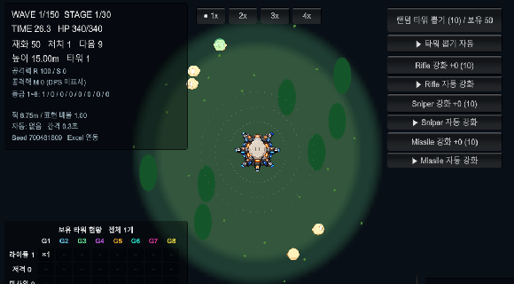
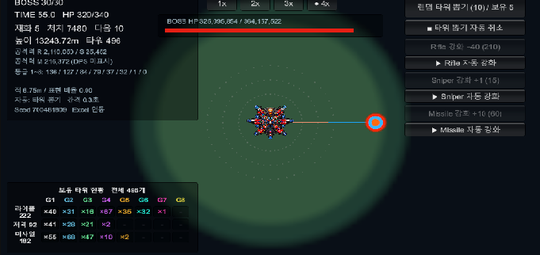

이 게임의 기획 의도
적을 처치해 공격력이 커지는 데서 끝나지 않고, 이전에는 거대했던 적이 점점 작게 보이는 경험을 성장 보상으로 삼았습니다. 타워의 누적 높이는 전투력, 보스 흡수, 주변 세계의 상대 크기와 연결됩니다.
새 타워는 적층의 최하단에 추가됩니다. 별도 높이 증가 애니메이션 없이 고정된 탑뷰에서 표시 요소를 축소하는 구현 방식입니다.
실제 화면에서 확인하는 성장
같은 프로젝트의 초반과 후반을 비교하면 중앙 타워의 누적 높이와 함께 세계의 표시 스케일이 달라집니다. 아래는 제공받은 초·후반 비교 화면에서 여백만 잘라낸 실제 캡처입니다.


실제 구현은 별도의 높이 상승 애니메이션이 아니라 표시 요소의 스케일 변화 방식입니다. 성장 비교는 서로 다른 진행 시점의 캡처이며 실시간 연속 프레임은 아닙니다.
전투·성장 시스템
- 일반 몬스터 우선, 그중 중앙에 가장 가까운 대상
- 일반 몬스터가 없을 때 보스 공격
- 같은 시각의 공격은 생성된 타워 순서로 처리
- 등급별 다단히트와 대상 사망 예외 처리
- 라이플 / 스나이퍼 / 미사일 3종
- 1~8등급, 8등급은 동일 종류 시너지
- 종류별 공용 강화로 전체 타워 성장
- 구매·강화·보스 흡수 시 표시 크기 변화
뽑기 · 강화 · 전투 보상
규칙표에 적은 타워 획득과 강화, 처치 보상이 실제 게임에서 어떻게 표시되는지 보여줍니다. 현재 화면은 개발자와 협업 중인 임시 UI 기반 플레이 가능 빌드입니다.
고정 웨이브 데이터
전투 난이도를 HP 수치만으로 조절하지 않고 동시 생성 묶음과 간격, 이전 웨이브의 잔여 적을 이용해 조정합니다. 150개 일반 웨이브에 4,275개 고정 생성 묶음을 배치했습니다.
스테이지를 바꾸면 해당 구간의 일반 웨이브당 몬스터 수를 확인할 수 있습니다. 전체 일반 웨이브 수는 한 스테이지당 5개입니다.
기준: 2026-10-30 고정 편성. 이 그래프는 실제 런타임 기록이 아닌 기획 데이터 조회입니다.
재등장 규칙 변경
과거 몬스터를 가변 편성으로 재사용하는 구조
직전 스테이지의 동일 웨이브 위치 몬스터만 고정된 종류·마릿수로 재등장
예: 2-2웨이브 = 신규 g 35마리 + 이전 b 15마리. 편성 변동을 제거해 실험의 재현성을 높이는 의도입니다.
문제 발견 → 수정 방향
실패가 발생한 웨이브와 실제 원인 몬스터가 달랐다
3번째 웨이브 중 HP 손실이 크게 나타나도, 그 적은 2번째 웨이브에서 생성됐을 수 있습니다. 충돌 시점과 출생 웨이브를 구분해 피해 원인을 추적하도록 분석 기준을 바꿨습니다.
완주율이 목표와 같아도 실패 원인은 편중됐다
이전 모델의 60회 시뮬레이션에서 12회 완주(20%)했지만 실패 48회 모두 보스 제한시간 초과였습니다. 전체 완주율과 일반 적 압박·보스 난도를 별도로 평가해야 한다는 결론을 도출했습니다.
일반 웨이브 압박을 구간별로 조정했다
중후반 일부 구간은 몬스터가 지나치게 쉽게 처리되거나 특정 구간에 손실이 몰려 생성 간격을 수정했습니다. 과거 동일 288회 비교 기록은 있으나, 10월 30일 최신 고정 편성의 실험 결과와 혼합하지 않습니다.
당시 6개 자동 전략 × 10개 시드. Unity 실기 결과도, 최신 데이터 기준 완주율도 아닙니다.
보스 전투에서 보상 선택까지
제한시간 내 보스를 쓰러뜨린 뒤 재화 또는 원하는 종류의 타워를 선택하는 과정을 연결했습니다. 고등급 보장과 보스 크기 흡수가 성장의 전환점이 됩니다.
캡처는 서로 다른 플레이 시점이며 한 번의 연속된 전투 기록은 아닙니다. 실제 밸런스 성공 여부를 의미하지 않습니다.
구현과 기획 역할의 구분
- 핵심 루프·성장 구조 설계
- 타워 공격·강화·보스 규칙 정의
- 150웨이브 고정 데이터 구성
- 시뮬레이션 조건·결과 검토와 수정안
- 게임 시스템 프로그래밍
- 전투와 전체 웨이브 구현
- 실행 가능한 프로토타입 제작
- 기획 데이터 적용 및 수정
실제 게임 화면 6종 반영 완료
초·후반 비교, 뽑기, 강화, 전투 보상, 보스, 보스 보상 · 플레이 영상은 별도 확보 예정상세 기획 문서와 데이터
본문에는 핵심 판단과 근거만 요약하고, 전체 규칙과 수치는 문서·데이터 파일로 분리했습니다.
PDF·DOCX는 기존 기획 자료로, 웹페이지에 반영된 최신 개발 상태와 일부 표현 차이가 있을 수 있습니다. 배포 전 최종 검토를 권장합니다.